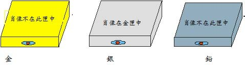
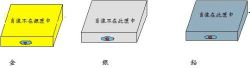
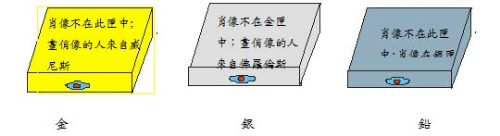
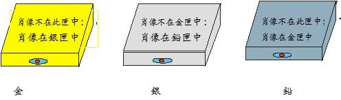
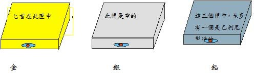
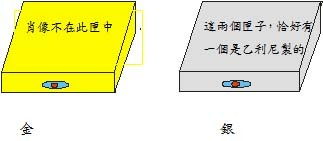

波蒂雅的肖像

圖：波蒂雅以猜匣為婚，王公貴族，皆選金匣或銀匣，唯有巴薩尼奧選鉛箱，波蒂雅肖像果然在鉛箱。
一、 威尼斯商人
1.小時候的故事
小時候聽一位長輩說，她的老師在上課時講了一個有趣的故事，故事是說：有一個熱心人，他為朋友要向其未婚妻求婚，需要一筆龐大金錢（三千金幣），這位熱心的人自已的金錢全部投資在海外貿易，一時也籌不出錢，就硬著頭皮向一位專門放高利貸的猶太人借貸，這二人平時就互相討厭對方（猶太人討厭熱心人借錢給人從不收利息，打破行情，熱心人討厭猶太人放高利貸），沒有想到這位猶太人卻慷慨答應借3個月，不要利息，但言明到時候不能還錢，要割下一磅的肉抵債，熱心人估計他的船3個月應會回來，就答應了。
2. 熱心人的朋友拿到3000錢幣
熱心人的朋友拿了三千金幣去向他美麗的未婚妻求婚，這位美麗的未婚妻年輕貌美有許多的王公貴族向她求婚，她遵守父親遺言，即有金、銀、鉛三個箱子，裡面只有一個箱放著這位美麗少女的肖像，猜中者便可娶這位少女，所有的人，除了這位熱心者的朋友未試外，都未猜中。這位熱心者的朋友前往求婚，當然猜中，贏得美人歸。
3. 猶太人偷雞不著蝕把米
故事這時才進入高潮，我們的熱心人聽說他的船在回程途中沉沒了，當然到期無法還錢，這位猶太人認為是報仇的良機，當然不會錯過這個機會，在法庭控告並準備割取這位熱心人士的一磅肉，這時這位年輕美麗的少女擔任律師出庭辯護，她很機智的說：要割一磅肉可以，但要照合約執行；剛剛好一磅，不能多，也不能少，且不能流出一滴血，否則就又要接受死刑，財產被充公。猶太人聽了心寒，想拿回貸款一走了之。但這位美麗的少女繼續窮追猛打，要求猶太人將全部財產一半賠償給熱心人，一半充公，最後在這位熱心人的懇求下，猶太人將他財產的一半交熱心人保管，猶太人死後，把這些財產交給他的女兒及女婿（也是熱心人的朋友），並且死後全部遺產也贈給他的女兒及女婿。
4.追蹤故事來源
我當時聽了這個故事，覺得這位少女很機智，一直想要知道故事的來源，可惜從來沒有人告訴我，後來有一天，我在新竹街上散步時，偶爾看到有一部電影廣告標題寫著：有一個商人向人借錢無力奉還，對方要向他割下一磅肉抵債，這使我回憶小時候聽到的故事，可惜當時仍在求學階段，又錯過觀看機會，一直到台北工作後，我從各種報章雜誌看到各種片言消息，推測這個故事應該來至莎士比亞的戲劇「威尼斯商人」，但是也沒有十分把握一定是，後來買了一本改寫的威尼斯商人英文小說（從莎士比亞的戲劇改寫），但一放就是十幾年，現在要在網路寫文章了，才開始讀它，發現小時候聽到的故事果然叫「威尼斯商人」，故事中熱心人士叫安東尼奧（Antonio）；他的朋友叫巴薩尼奧 （Bassanio） ；美麗少女叫波蒂雅 (Portia)；猶太人叫夏洛克(Shylock)。三個箱子第一箱是金箱，上面寫著：「誰要選我，便會得到眾人希冀的東西。」；第二箱是銀箱，上面寫著：「誰要選我，便會得到他所應得的東西。」第三箱是鉛箱，上面寫著：「誰要選我，一定拿出他所有一切來冒險。」所有王公貴族都選金箱或銀箱，只有巴薩尼奧選鉛箱，波蒂亞肖像果然在鉛箱。
二、 「波蒂雅的肖像」
「波蒂雅的肖像」取材於莎士比亞的著名喜劇 「威尼斯商人」。
在該劇中，有個非常引人入勝的情節:富家少女波蒂雅，不只姿容絕世，而 且有卓越的才能。父視去世時，給她大筆財產，因此，求婚者蜂擁而至，其中有阿拉崗親王（The Prince of Aragon）、摩洛哥王子（The Prince of Morocco）等顯赫貴族。但是，波蒂雅自己並沒有擇夫的自由，她的亡父在遺囑裡規定要猜匣為婚。
「猜匣為婚」這個富有戲劇性的情節，當初波蒂雅的猜匣為婚應該只是試驗求婚者對財富的價值觀和應用（參考前文），但後來卻激發了智力設計家們的靈感，他們以奇異的思路編出許多有趣的智力題來。
「科學的美國人」雜誌在世界上具有廣泛的影響力。該雜誌在1976年第二期 「業餘數學家」刊登一序列以「波蒂雅的肖像」為題的智力題目，吸引了眾多的讀者。也使廣大的讀者領略了智力題的無窮樂趣。題目如下：
題目1：波蒂雅的擇夫

假定波蒂雅不想按照他父親的遺囑來選擇丈夫，而想以智力來擇夫。她在金、銀、鉛三個匣，上面分別刻著一句話。三個匣子中，只有一個匣子放著波蒂雅的肖像。波蒂雅說:「這三句話，只有一句是真的。」求婚者如果透過這三句話，猜中肖像放在哪個匣子中，就嫁給他。
請問:求婚者應該選擇哪一個匣子?
題目2：波蒂雅再婚

波蒂雅結婚後，確實過了一段幸福、甜蜜的日子，但卻因故離了婚，離婚後，她興起怪念頭:「我的前夫選對了匣子，看起來他是有點小聰明。但那道題不算真正的難題，我可以把它設計得更難，那樣，我就可以找到一個真正聰明的丈夫了。」
因此，她又設計三句話，寫在三個匣子上。
波蒂雅向新的求婚者提示道:這三句話中，至少有一句是真的，且至少有一句是假的。
請問: 求婚者應該選擇哪一個匣子?
題目3： 波蒂雅二世的結婚
應該是命中注定吧!求婚者有一位是她的前夫。他也的確是個天才，一下子就把這道題解出來了。
二個蓋世聰明的人再次結婚了。他們終於有個女兒，波蒂雅二世。等到小波蒂雅長到荳蔻年華時，和她媽一樣聰明，一樣美麗。她也決定採用猜匣子的方式結婚。求婚者想娶她，非得過兩道考試不可。先經過初試，初試過後再作第二道複試。
初試：

初試考法如下：
金、銀、鉛三個匣子，每個匣子都有兩句話。
- 金匣子寫的兩句話是:肖像不在此匣中; 畫俏像的人來自威尼斯。
- 銀匣子上刻的兩句話是:肖像不在金匣中；畫俏像的人來自佛羅倫斯。
鉛匣子上刻的兩句話是:肖像不在此匣中;肖像在銀匣中。
波蒂雅二世向求婚者表示:每個匣于上的兩句話不會都是假的。
請問:肖像在哪個匣子中?
複試：
求婚者如果初試合格，就被領進另一間屋于，那屋子也放著三個匣子。每個匣子仍是各有兩句話。波蒂雅二世提示：有一個匣子兩句話都真．另一個匣子兩句話都假，第三個匣子的兩句話一句真一句假。
- 金匣子寫的兩句話是:肖像不在此匣中:肖像在銀匣中。
- 銀匣子寫的兩句話是:肖像不在金匣中:肖像在鉛匣中。
- 鉛匣子寫的兩句話是:肖像不在此匣中;肖像在金匣中。

請問:肖像放在哪個匣子中?
題目4：波蒂雅三世的結婚
有個英俊的求婚者兩次考試都合格，高高興興地娶了波蒂雅二世為妻。
此後他們也過得很幸福，不久，生了一個愛女波蒂雅三世。等到她長成了少女，又與她媽和外婆一樣聰明，一樣美麗。她也決定採用猜匣為婚。
這回，求婚者想娶她．非得過三道考試不可了!
考法也真是獨具匠心。她恢復外婆的舊計，每個匣于上只題一句話，不再題兩句話。可是，耍了一個花槍。她向求婚者提示:每個匣子都是由佛羅倫斯兩位著名工匠其中製造的，這二個巧匠的名字，一個叫甲利尼，一個叫乙利尼。甲利尼每打製一個匣子，總在匣子上題一句假話:而乙利尼在打製的匣子上只題真話。

初試
- 金匣子上刻的一句話是:匕首在此匣中；
- 銀匣子上刻的一句話是：此匣是空的；
- 鉛匣子上刻的一句話是:這三個匣中，至多有一個是乙利尼製造的。
波蒂雅三世不用肖像，改用匕首，她將一把匕首放在三個匣的一個中，另外兩個是空的。如果求婚者能避開放匕首的匣子，就能進入複試。
請問:要避開匕首，求婚者該選哪個匣子?
複試
波蒂雅三世在複試只用了金、銀兩個匣子，其中一個放著肖像;這次不再用匕首。每匣子仍是由甲利尼或乙利尼製造的。
金匣子寫著:肖像不在此匣中;銀匣子寫著:這兩個匣子，恰好有一個是乙利尼製的。

問:為了找到肖像，求婚者該選哪個匣子?
關鍵一試
求婚者如果兩次考試都合格，波蒂雅三世就會領他進另一間屋子．這間屋子裏放有金匣子、銀匣子、鉛匣子各一個。每個匣子仍是由甲利尼或乙利尼打製的。波蒂雅三世把她自己的肖像放在一個匣子裹。要過這道考試，求婚者必須做到:選出放著肖像的匣子:說出每個匣子的製造者。
金匣子上刻的一句話是:肖像在此匣中;
銀匣子上刻的一句話是:肖像在此匣中;
鉛匣子上刻的一句話是:這三個匣子中，至少有兩個是甲利尼製造的。
請問：如果你是求婚者，打算怎麼解?
答案
題目1：鉛匣
本題中，求婚者應該選擇鉛匣子，也就是說，肖像一定在鉛匣中，理由是，金匣子上寫著:「肖像不在此匣中」，而銀匣子卻寫着:「肖像在金匣中」，這兩句話是矛盾的，兩個互相矛盾的東西，不能同假，也不能同真，其中必有一真，又因已知三句話中只有一句是真的。因此，我們可以斷定三句話中惟一的一句真話，不是金匣是真的，就是銀匣是真的。鉛匣的話應該是假話。而鉛匣上寫着「肖像不在此匣中。」既然這句話是假的，那麼，肖像就一定在此匣了。
題目2：金匣
假設:肖像果真在鉛匣子中，証明金、銀匣子上的話是對的，因此三句話就全都是真的，這就違背設定條件。因此鉛匣子的話是假的，且肖像不在鉛匣子中。
假設:肖像在銀匣子中，那麼，金匣子的話（肖像不在銀匣子中）及鉛匣子的話（肖像在此匣子中）是假的，也就是說三句話就全都是假的，又違背設定條件。
所以，肖像只能在金匣裏。假設肖像在金匣中，結果，則金匣與銀匣的話是真的，鉛匣是假話，這與設定條件一致，因此肖像金匣裏。
答題3
初試答案 銀匣
鉛匣子可以先排除，因為假如肖像在鉛匣子裏，那麼，它上面寫的兩句話都成了假的了。（與假設條件不符）
因此，肖像不是在金匣子中，就是在銀匣子中。
可是，金匣子上的前一句話（肖像不在此匣子中）和銀匣子上的前一句話（肖像不在金匣子中）內容是相同的，都講肖像不在金匣子中。那麼，它們要麼都是真的，要麼都是假的。
依假設條件，假設這後兩句話都是假的，那麼，金匣子與銀匣子的第二句話便都是真的。但是，這是不可能的，因為因為畫像的人只有一個，不是來自威尼斯就是來自佛羅倫斯，它們不可能同真。因此，這個假設不能成立。所以，金匣子和銀匣子上的兩句話都是真的，也就是說肖像不在金匣子中。因此，可以斷定肖像在銀匣子中。
複試答案：鉛匣
假設肖像在金匣子中，那麼，金匣子與銀匣子的兩句話都是假的。與假設只有一個匣子二句話是假的，相違背。
假設肖像在銀匣子中，銀匣子與鉛匣子上就各有一句真話（肖像不在金匣子、肖像不在此匣中），且各有一句話是假的（肖像在鉛匣子、肖像在金匣子），這又同假設條件不符。
所以．肖像是在鉛匣中。
如此可推，銀匣子上有兩句真話，鉛匣子上有雨句假話．金匣子上一真-假。
答題4
初試答案：鉛匣
先討論鉛匣子是誰製造的？
假設鉛匣子是乙利尼造的。如果這樣，它上面的二句話全部是真的（都是乙利尼說的），因此，另外兩個匣子是甲利尼造的（金、銀匣子上面的話是假的）。因此，金匣子申不藏匕首，匕首在銀匣子中。因此，如果鉛匣子出乙利尼之手，匕首藏在銀匣子中。
假設:鉛匣子是甲利尼造的。它上面的話就是假的，因此乙應該至少有造了兩個匣子。也就是說金、銀二個匣子都是乙利尼造的 ，鉛匣子是甲利尼造的。既然如此，金匣子與銀匣子的話都是真的。在這種情形下，匕首是在金匣子中。
不管是什麼情況．匕首不會藏在鉛匣中。所以，求婚者該選鉛匣子。
複試答案
假設銀匣子是乙利尼打製的，因為乙利尼的說是真的，在這種情況下，金匣子就是甲利尼打的。則肖像在金匣子中。
假設銀匣子是甲利尼打製的。則恰好有一個匣子是乙利尼打的，就不合命題條件。這等於說，金匣子也是甲利尼打製的，所以金匣子的話是假的，都。也就是說肖像是在金匣子中。
關鍵一試答案：鉛匣
先證明鉛匣子是乙利尼製造的。
假設鉛匣子是甲利尼造的，如果這樣，那麼它上面的話就是假的。這意味著至少有兩個是甲利尼製的，不對，也就是說乙利尼造了另外二個（金匣子與銀匣子）。但是，這是不可能的，因為肖像不會同時存在金匣子及銀匣子中。由此可見，鉛匣子只能是乙利尼造的。因此，它上面的話是真的。甲利尼打造了兩個匣子（金匣子與銀匣子）。又，因為它們上面的話都是假的。肖像既不在金匣子中不在銀匣子中，所以，肖像是在鉛匣子裏。